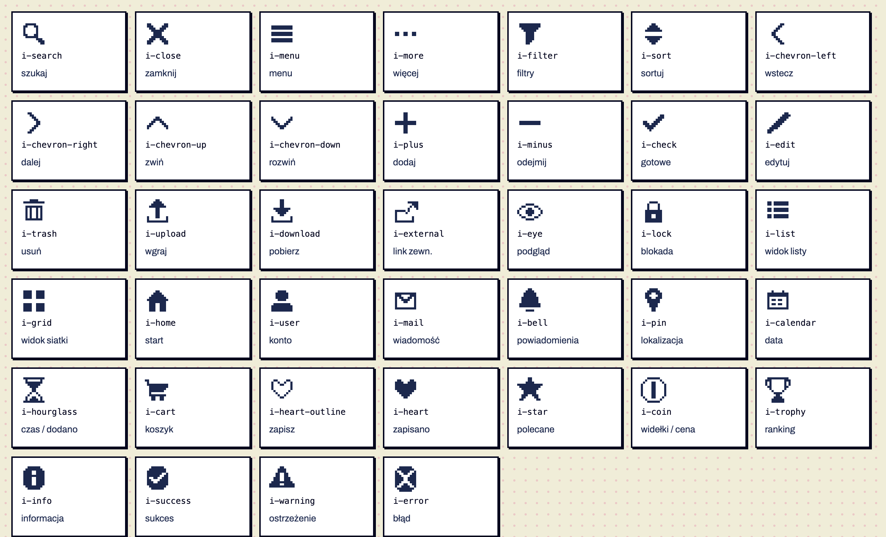
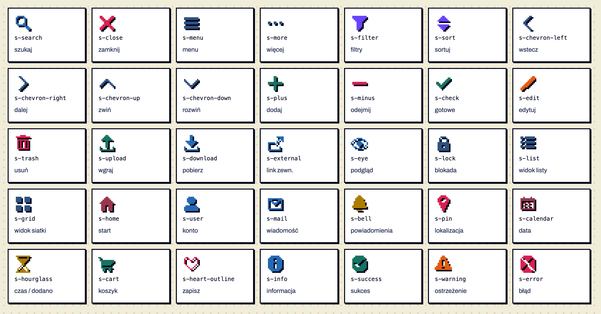
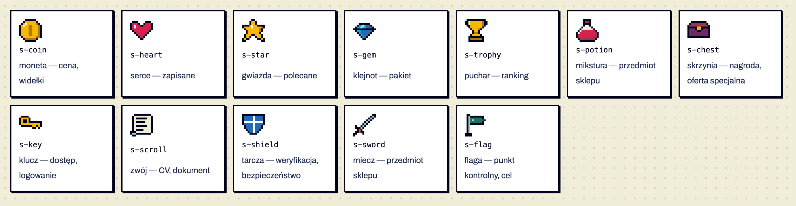
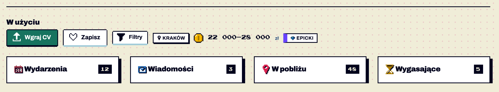

Komponenty / Ikony
Ikony pikselowe
testowy Ikony pikselowe · od 1.7 — brakuje: użycie na 2 ekranach
Znak graficzny obok tekstu albo jako jedyna treść przycisku. Trzy grupy: ikony interfejsu (39, kolor tekstu) — przyciski, pola, nawigacja; kolorowe wersje tych samych ikon (35, kolor wg znaczenia + cień 1 px) — akcenty w nagłówkach kategorii, pustych stanach, listach cech; przedmioty z gier (12, ręcznie rysowane) — moneta przy kwotach, puchar w rankingu, klejnot przy pakietach, zwój przy CV. Do monogramu firmy użyj awatara (K05), do statusu komunikatu — powiadomienia (K22). Potwierdzone w dokumentacji S01 §5, S22.




Anatomia i komponenty składowe
| Część / rola | Wymagana / opcjonalna | Składnik / źródło | Co można zmienić / status |
|---|---|---|---|
| siatka 12×12, piksel = 2 px przy 24 px | wymagana | scripts/build_icons.py | rysunek ASCII → SVG crispEdges Potwierdzone w dokumentacji |
| kształt w kolorze tekstu | wymagany (UI) | .icon .i-… — maska, currentColor | kolor dziedziczony Potwierdzone w dokumentacji |
| kolor + cień 1 px prawo-dół | kolorowe | .sprite .s-… | kolor wg znaczenia, jaśnieje w trybie ciemnym Potwierdzone w dokumentacji |
| obrys + 2–4 kolory palety | przedmioty | .sprite .s-coin itd. | obrys jaśnieje w trybie ciemnym Potwierdzone w dokumentacji |
Warianty i zastosowanie
| Oś | Wartość | Kiedy użyć | Co się zmienia | Ograniczenia / status / źródło |
|---|---|---|---|---|
| grupa | interfejsu | przycisk, pole, nawigacja, menu | kolor = tekst / stan | Potwierdzone w dokumentacji 39 ikon |
| grupa | kolorowe | nagłówki kategorii, puste stany, listy cech | kolor znaczenia: niebieski info/nawigacja, zielony dodanie/sukces, czerwony usunięcie/błąd, pomarańczowy edycja/ostrzeżenie, fioletowy filtry, złoty czas/powiadomienia | Potwierdzone w dokumentacji 35 ikon; nie w przyciskach |
| grupa | przedmioty | akcent przy liczbie lub nazwie | wielokolorowe | Potwierdzone w dokumentacji 12; nigdy jedyny nośnik znaczenia |
| rozmiar | 12 / 24 / 36 / 48 px | -sm / domyślny / -lg / -xl | tylko wielokrotności 12 | Potwierdzone w dokumentacji 16 i 20 px rozmywają piksele |
Zachowanie, treści i lokalizacja
Statyczne. Nowa ikona: rysunek ASCII w build_icons.py → powstają wersja UI, kolorowa i strona galerii. Żadnych emoji ani obcych zestawów ikon (check_screen ostrzega) Potwierdzone w dokumentacji. Bez grafik z konkretnych gier — z zestawu usunięto ikonę „1UP” przypominającą znany przedmiot Potwierdzone w dokumentacji.
Zalecane i niewskazane
| Zalecane — przykład | Niewskazane — przykład | Powód / status / źródło |
|---|---|---|
„Wgraj CV” z i-upload w kolorze tekstu przycisku | kolorowa ikona w przycisku głównym | w przycisku kolor znaczy stan, nie dekorację Potwierdzone w dokumentacji |
| moneta obok kwoty „22 000–28 000 zł” | sama moneta zamiast kwoty | przedmiot jest akcentem, nie informacją Potwierdzone w dokumentacji |
| ikona 24 px | ikona 20 px | piksele 1,67 px się rozmywają Potwierdzone w dokumentacji |
Tokeny i style
| Zastosowanie | Token | Tryb / wariant | Wartość | Źródło | Status |
|---|---|---|---|---|---|
| kolor UI | currentColor | z tekstu | S02 icons.css | Potwierdzone w dokumentacji | |
| kolorowe | stałe hex z palety | jasny / ciemny | np. #2469B3 / #0BAFE6 | build_icons.py TINT | Potwierdzone w dokumentacji |
| cień | stały | #00021C / #000000 | build_icons.py | Potwierdzone w dokumentacji |
Wymiary, odległości i układ
| Elementy / krawędzie | Wariant | Wartość / relacja | Token | Reguła / źródło / dokładność |
|---|---|---|---|---|
| ikona | — | 24×24 domyślnie | — | Potwierdzone w dokumentacji |
| ikona ↔ tekst w przycisku | — | gap 8 px, ikona −4 px w lewo | — | Potwierdzone w dokumentacji .btn .icon |
Typografia
| Rola tekstu | Styl | Font / weight | Rozmiar | Interlinia | Tracking | Kolor / zachowanie / status |
|---|---|---|---|---|---|---|
| Nie dotyczy | ikony nie zawierają tekstu |
Przykład na żywo
Ta sama sekcja co w examples/ikony.html — działa na systemie 1.11.0. Przełącz motyw w nagłówku, żeby zobaczyć tryb ciemny.
W użyciu
Wydarzenia
12Wiadomości
3W pobliżu
48Wygasające
5Kod przykładu
<section class="ex" aria-labelledby="h5"><h2 id="h5">W użyciu</h2>
<div class="demo-row">
<a class="btn btn-primary" href="komponenty.html#formularze"><span class="icon i-upload" aria-hidden="true"></span>Wgraj CV</a>
<button class="btn btn-secondary" type="button" aria-pressed="false" data-label-on="Zapisano" data-label-off="Zapisz"><span class="icon i-heart-outline" aria-hidden="true"></span>Zapisz</button>
<a class="btn btn-secondary btn-compact" href="komponenty.html#listy"><span class="icon i-filter" aria-hidden="true"></span>Filtry</a>
<span class="badge"><span class="icon icon-sm i-pin" aria-hidden="true"></span> Kraków</span>
<span class="amount" style="margin:0"><span class="sprite s-coin" aria-hidden="true"></span> 22 000–28 000 <small>zł</small></span>
<span class="tier-tag tier-epic"><span class="sprite sprite-sm s-gem" aria-hidden="true"></span> Epicki</span>
</div>
<div class="grid-panels" style="margin-top:24px">
<section class="panel"><div class="panel-head"><h2><span class="sprite s-calendar" aria-hidden="true"></span> Wydarzenia</h2><span class="count">12</span></div></section>
<section class="panel"><div class="panel-head"><h2><span class="sprite s-mail" aria-hidden="true"></span> Wiadomości</h2><span class="count">3</span></div></section>
<section class="panel"><div class="panel-head"><h2><span class="sprite s-pin" aria-hidden="true"></span> W pobliżu</h2><span class="count">48</span></div></section>
<section class="panel"><div class="panel-head"><h2><span class="sprite s-hourglass" aria-hidden="true"></span> Wygasające</h2><span class="count">5</span></div></section>
</div></section>Właściwości i atrybuty
| Właściwość / atrybut | Typ | Wartości pokazane / opisane | Domyślna | Efekt i zastosowanie | Zależności / status / źródło |
|---|---|---|---|---|---|
| nazwa | klasa | i-search … i-error, s-… | — | wybór ikony | Potwierdzone w dokumentacji lista: examples/ikony.html |
| aria-hidden | atrybut | true | — | ikona obok tekstu | Potwierdzone w dokumentacji wymagane |
| aria-label | tekst | na przycisku | — | gdy ikona jest jedyną treścią | Potwierdzone w dokumentacji .icon-btn (K25) |
Cel: WCAG 2.2 AA. Statyczne materiały i testy automatyczne w Chrome nie dowodzą zgodności — miejsca oznaczone „Do testu we wdrożeniu” wymagają testu z czytnikiem ekranu (design.md §0.6).
| Obszar | Ustalenie lub wymaganie | Dowód / status | Kryterium / wzorzec | Jak sprawdzić |
|---|---|---|---|---|
| dekoracja | aria-hidden="true" obok tekstu | Potwierdzone w dokumentacji | WCAG 1.1.1 (A) | czytnik |
| przycisk z ikoną | aria-label z nazwą akcji | Potwierdzone w dokumentacji | WCAG 4.1.2, 2.5.3 | czytnik Do testu we wdrożeniu |
| kontrast | ikony UI w kolorze tekstu; kolorowe: tylko akcent | Potwierdzone w dokumentacji | WCAG 1.4.11 (AA) dla ikon znaczących | pomiar Do testu we wdrożeniu |
| wysoki kontrast | ikony UI biorą kolor systemowy (forced-color-adjust none + currentColor) | Potwierdzone w dokumentacji w CSS | — | Windows Do testu we wdrożeniu |
Źródła
S01 §5; S02 icons.css; S22; build_icons.py.